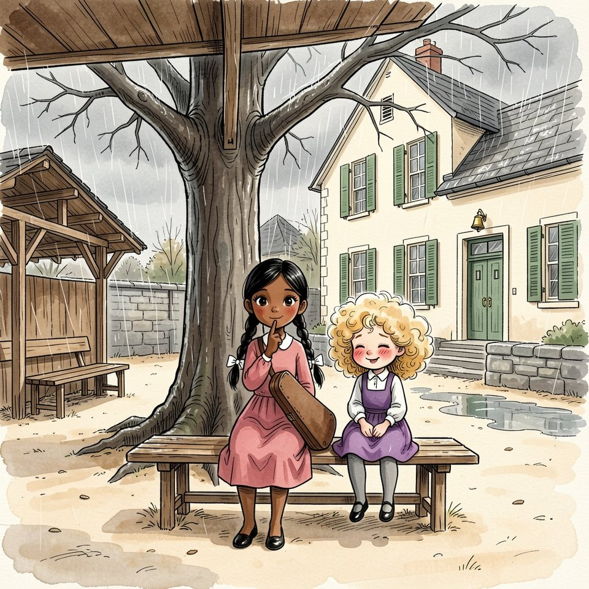

Titistoire › Les Comètes (6-8 ans)
Quatre places sous le préau
Une année à Virevent, l'histoire du mois de novembre : Jeanne, Gaspard, Suzie et Marin.

▶ Écouter et regarder l'histoire
Gratuit, sans inscription : la voix lit, le texte suit mot à mot, les images tournent comme dans un album.
Le texte de l'histoire
Il pleuvait sur Virevent depuis lundi. Il pleuvait sur les ardoises, sur le pont Bossu, sur la comète du beffroi, qui gouttait comme un nez enrhumé. La Flânette, toute brune, n'en coulait pas plus vite.
Dans la cour, le cerisier n'avait plus une feuille pour arrêter les gouttes. Restait le préau, et sous le préau, le banc. Un banc de quatre places. Pas cinq : Gaspard avait mesuré.
C'était Garance qui les distribuait. Elle posait sa serviette à musique au milieu et désignait du menton. « Jeanne, ici. Gaspard, au bout. Suzie, à côté de moi. »
Suzie rosissait chaque fois. Être choisie, c'était recevoir un pain chaud dans les mains ; et un pain chaud, cela ne se discute pas. Elle s'asseyait, lissait sa robe violette, et tâchait de ne pas compter.
Car ils étaient cinq. Le cinquième restait debout, là où le toit s'arrêtait. C'était Marin. Lundi, mardi, mercredi : toujours lui. La pluie lui coulait dans le cou, qu'il avait très long.
« Marin a un ciré, lui, expliqua Garance. La pluie ne le dérange pas. On met dehors celui qui est imperméable : c'est logique. » Gaspard chercha la faute dans le calcul, ne la trouva pas, et se tut.
Jeanne racontait une inondation où l'eau montait jusqu'au grenier ; elle ne voyait rien d'autre. « N'est-ce pas, Suzie ? » insista Garance. Suzie tortilla une boucle autour de son doigt.
Elle regarda le ciré jaune, luisant comme un citron. Un ciré, c'était fait pour la pluie, après tout. Et puis Marin ne se plaignait pas. « Oui, oui… »
Gaspard, pour être en règle, demanda à Marin si cela l'ennuyait. Marin replia une jambe, le pied calé derrière le mollet. « Ça m'est égal. » Il répondit à Gaspard. Il ne regarda pas Suzie.
Sous le banc, entre les souliers de Suzie, dépassaient deux bottes orange. Mimosa, quatre ans, la suivait partout. Elle n'occupait aucune place, et ne perdait pas un mot.
Le lendemain, il pleuvait encore. Le Fournil sentait la croûte chaude ; les parents de Suzie avaient de la farine jusqu'aux sourcils. Elle prit son parapluie et alla chercher Mimosa, la petite voisine, comme chaque matin.
Mimosa refaisait tout ce que faisait Suzie, avec un jour de retard. Elle avait son parapluie, elle aussi, guère plus large qu'une assiette, et le tenait de la même façon : un peu penché, le petit doigt en l'air.
Au coin de la place, un garçon plus petit encore trottinait en bottes, tête nue. Il se glissa sous le parapluie-assiette. Mimosa le repoussa du coude, très poliment.
« Toi, t'as des bottes, déclara-t-elle. La pluie, ça te dérange pas. » Elle hocha ses deux couettes et ajouta, d'une voix douce, toute douce : « Oui, oui… »
Suzie s'arrêta net au milieu d'une flaque. C'était sa phrase. C'était sa voix. Même le petit silence après le deuxième oui était exactement le sien.
« Mimosa ! Pourquoi tu lui parles comme ça ? » — « C'est comme toi. Hier. Au grand jaune. » Mimosa levait vers elle deux yeux ronds, sans reproche, noirs comme des boutons de bottine.
Puis ce fut son tour de questionner. « Pourquoi il reste dehors, le grand jaune ? » — « Parce qu'il a un ciré. » — « Pourquoi il vient pas sur le banc ? »
« Parce qu'il n'y a que quatre places. » — « Pourquoi c'est toujours lui ? » — « Parce que Garance l'a décidé. » Trois pourquoi. Avec Mimosa, il fallait tenir jusqu'à cinq.
« Pourquoi elle décide ? » Suzie ne sut que répondre. Le cinquième arriva quand même, tranquille, sous les couettes : « Et toi, pourquoi tu réponds oui, oui ? » Suzie n'avait rien à mettre après « parce que ».
Mimosa avait déjà oublié ; elle sautait dans les flaques. Derrière, le petit garçon suivait, les cheveux collés. Suzie pencha son parapluie au-dessus de lui. Ici, c'était facile. Il n'y avait personne à qui déplaire.
Toute la matinée, les mots la suivirent. Ils coulaient dans la gouttière : oui, oui, oui, oui. Ils tintaient dans la poche de Monsieur Grison, qui passait entre les rangs : cling-cling, oui-oui.
Au mur, les manteaux séchaient sur les crochets de cuivre. Sous le ciré jaune grandissait une flaque, la seule de toute la rangée. Ploc. Ploc. Suzie ne voyait qu'elle.
« Suzie ! Six fois quatre ? » Elle sursauta. « Oui, oui… » La classe pouffa. Monsieur Grison haussa ses deux touffes grises. « Voilà un résultat que je ne connaissais pas. »
À côté d'elle, Marin poussa son ardoise d'un doigt. Dessus, à la craie : vingt-quatre. Il ne la regarda pas. Son épi, d'ordinaire si droit, était encore couché comme l'herbe après l'averse.
Vingt-quatre. Quatre places. Cinq enfants. Suzie n'était pas forte en calcul ; celui-là, pourtant, elle le refit dix fois jusqu'à la récréation, et il tombait toujours mal.
À la récréation, il pleuvait de plus belle. Garance posa sa serviette, désigna du menton. « Suzie, à côté de moi. » Suzie s'assit. Le banc était sec et tiède. Elle s'y sentit très mal.
Marin avait repris son poste au bord du toit, sur une jambe. Entre lui et le banc : trois pas, et un rideau de pluie. Suzie prit son élan. « Garance, on pourrait peut-être… se serrer ? Enfin, je crois… »
Garance la considéra avec bonté. « Ce n'est pas pour être méchante, Suzie, mais il est si grand qu'il lui faudrait deux places. Et puis il a son ciré. N'est-ce pas ? »
Suzie sentit le premier oui monter tout seul, bien rond, bien poli. Le second resta coincé quelque part entre le ventre et la gorge. Elle chercha un autre mot. Elle n'en avait pas l'habitude.
Elle chercha longtemps. Jeanne en était à sa deuxième inondation. Gaspard comptait les gouttes du toit. Les mots ne vinrent pas. Alors ce furent les pieds qui vinrent.
Suzie se leva. Sans un mot. Elle ne sut où elle allait qu'en y arrivant : trois pas, le rideau de pluie, et la place vide à côté de Marin.
La pluie lui tomba dessus d'un seul coup, froide, entière. Marin tourna la tête, de très haut. « Tu vas être mouillée. » — « Oui, oui. » Et pour une fois, ce oui-là était bien à elle.
« Ça ne te dérange vraiment pas, la pluie ? » Marin ouvrit la bouche. Elle connaissait la réponse ; toute l'école la connaissait. Mais il réfléchit, et ce fut une autre qui sortit. « Un peu. Dans le cou. »
Ils restèrent côte à côte à regarder tomber l'eau. Les boucles de Suzie buvaient comme une éponge. Son nuage s'aplatit, glissa, lui pendit sur les joues en longues nouilles blondes. Sa robe pesait déjà le double.
« Tu ressembles à un saule », constata Marin. — « Et toi, à un réverbère. » Alors il fit une chose très rare : il rit, sans bruit, rien qu'avec les épaules.
Suzie n'osait pas se retourner. Dans son dos, il y avait le banc, et Garance. Demain, le menton désignerait quelqu'un d'autre. Fini, le pain chaud. Elle resterait dehors, voilà tout.
Elle tordit le bas de sa robe ; il en coula de quoi remplir un encrier. C'est alors qu'une gerbe d'eau lui arrosa les mollets. Quelqu'un venait d'atterrir à pieds joints dans la plus grande flaque.
« Vous n'allez pas me croire ! cria Jeanne. Il pleut ! » Elle en avait jusqu'aux chevilles, et elle rayonnait. « Ce n'est plus une flaque, c'est un lac ! Un océan ! »
Puis vint Gaspard, le carnet à l'abri sous son gilet, l'air fâché contre lui-même. « Lundi, mardi, mercredi, jeudi. Quatre fois le même. J'ai compté. » Il se rangea près de Marin. « J'aurais dû compter avant. »
Alors seulement, Suzie se retourna. Le banc était toujours là, sec, tiède, avec ses quatre places. Il n'y restait qu'une serviette à musique, et Garance, toute droite, au milieu.
Elle ne désignait plus personne. Elle contemplait ses souliers vernis. Elle glissa un peu vers la gauche, puis un peu vers la droite, comme pour occuper le banc à elle seule. Le banc restait trop grand.
« Je suis très bien ici ! lança-t-elle. J'ai toute la place. Et moi, au moins, je suis sèche ! » Sa voix était précise, comme toujours. Seulement elle tremblait au bout, telle une note tenue trop longtemps.
Personne ne répondit. Jeanne mesurait son lac. Gaspard essuyait ses lunettes. Marin regardait ailleurs, poliment. Il n'y eut que Suzie pour voir. Suzie voyait toujours.
C'était plus fort qu'elle : le chagrin des autres lui arrivait dans le ventre avant d'arriver chez eux. Et celui-là, elle le reconnut. C'était le même qu'au bord du toit.
Suzie soupira. Elle venait à peine de sortir ! Elle rentra sous le préau, une rigole derrière elle, et s'arrêta devant le banc. De ses cheveux, les gouttes tombaient sur les souliers vernis.
« Tu viens ? » Garance leva le menton. « Dehors ? Ce n'est pas pour être méchante, mais vous êtes ridicules. Il pleut. Et je n'ai pas de ciré, moi. »
Suzie tortilla une mèche. Elle ne s'enroulait plus : elle collait. « Marin en a un », murmura-t-elle. C'était la phrase de Garance, simplement retournée, comme une chaussette.
Garance resta sans voix, ce qui ne lui arrivait jamais. Elle serra sa serviette contre elle, regarda le banc vide, puis les quatre trempés. Enfin elle se leva, très droite, comme si l'idée venait d'elle.
Au bord du toit, elle s'arrêta. Un pas encore, et c'en était fait de ses nattes, de ses rubans blancs, de son col rond. Elle n'avait jamais été dehors.
Marin la regarda venir. Il aurait pu compter, lui aussi : quatre jours, huit récréations. Il ne compta rien. Il défit les boutons de son ciré et l'ouvrit en grand, à bout de bras.
Cela faisait une tente. Une tente jaune, qui sentait le caoutchouc et la rivière, avec Marin pour mât. « Dessous », fit-il. Garance entra la première, sans un mot, la serviette sur le cœur.
Puis Suzie, puis Jeanne, puis Gaspard, qui fit observer qu'il n'y avait pas quatre places là-dessous. Il n'y en avait pas trois. On s'y serra quand même.
« Tu me marches sur le pied », signala Garance. — « Pardon », souffla Suzie, qui n'avait nulle part ailleurs où le poser. La cloche sonna. Sous la tente jaune, personne ne fit mine de l'entendre.
À quatre heures, il pleuvait toujours, et la nuit de novembre tombait avec la pluie. Sur la place, Madame Bogue allumait les réverbères. Chaque flaque en reçut un, tout rond, tout jaune.
Devant l'école, Marin rouvrit son ciré. Une bête jaune à dix jambes traversa la place en zigzag. Du milieu sortait une voix précise : « À gauche. Encore à gauche. Ce n'est pas pour être méchante, mais… »
Suzie marchait au bord, une épaule sous la pluie. Dans ses cheveux aplatis, une boucle, une seule, recommençait à tire-bouchonner. Elle n'aurait pas donné sa place pour un pain chaud.
Derrière trottinait Mimosa, sous son parapluie-assiette. Elle regardait la tente, le grand jaune, les dix jambes. Elle ne perdait rien. Elle ne posa pas une question. Pas un seul pourquoi.
Le petit garçon en bottes la rattrapa, tête nue. Mimosa le regarda. Elle regarda son parapluie. Puis elle se remit à trotter, sans se presser. Elle avait jusqu'à demain.